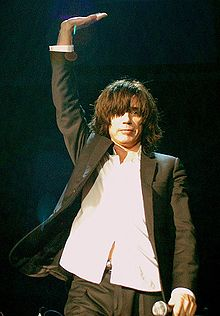

Jean Michel Jarre
| Jean Michel Jarre | |
|---|---|
|
 Jarre in Milan, 2008 |
|
| Background information | |
| Born | 24 August 1948 |
| Origin | Lyon, France |
| Genres | Electronic music, instrumental music, New Age, ambient |
| Occupations | Composer, musician, artist, producer |
| Instruments | Synthesizer, Piano, Organ, Laser harp, accordion, guitar, bass guitar |
| Years active | 1969–present |
| Labels | Disques Dreyfus, Polydor/PolyGram, Epic/SME, Warner Bros., EMI |
| Website | jeanmicheljarre.com |
{kind=link}
Jean-Michel André Jarre (born 24 August 1948) is a French composer, performer and music producer. He is a pioneer in the electronic, synthpop, ambient and New Age genres, and known as an organiser of outdoor spectacles of his music which feature lights, laser displays and fireworks.
Jarre was raised in Lyon by his mother and grandparents, and trained on the piano. From an early age he was introduced to a variety of art forms, including those of street performers, jazz musicians, and the artist Pierre Soulages. He played guitar in a band, but his musical style was perhaps most heavily influenced under the direction of Pierre Schaeffer, a pioneer of musique concrète at the Groupe de Recherches Musicales.
His first mainstream success was the 1976 album Oxygène. Recorded in a makeshift studio at his home, the album went on to sell an estimated 12 million copies. Oxygène was followed in 1978 by Équinoxe, and in 1979 Jarre performed to a record-breaking audience of more than a million people at the Place de la Concorde, a record he has since broken on three separate occasions. More albums were to follow, but his 1979 concert served as a blueprint for his future performances around the world. Several of his albums have been released to coincide with large-scale outdoor events, and he is now perhaps as well known as a performer, as he is a musician.
Jarre has sold an estimated 80 million albums and singles.[1] He was the first Western musician to be allowed to perform in the People's Republic of China, and holds the world record for the largest ever audience at an outdoor event.
Contents[hide] |
[edit] Early life, influences, and education
Jean Michel Jarre was born on 24 August 1948 in Lyon, the son of composer Maurice Jarre and French Resistance member and concentration camp survivor France Pejot.[2][3][4] The two separated when Jarre was five years old, his father moving to the United States, while Jarre remained with his mother in the suburbs of Paris.[5] Jarre did not meet his father again until he was eighteen.[3] He was born into a family of artists; his Grandfather, André Jarre, was an oboe player, engineer and inventor, who perfected the first audio mixer (used at Radio Lyon). He also gave Jean Michel his first record player.[6] For the first eight years of his life, for six months of each year Jean Michel lived at his Grandparent's flat along the Cours de Verdun, in the Perrache district of Lyon. As a child he watched street performers from the window, later citing their music as an influence on his art (traces of this can be found on his album Équinoxe, particularly "Équinoxe Part 8").[3][7]
At about the same time he studied classical piano,[8] an experience which proved difficult, but within a few years he had changed teachers and began work on his scales. His more general interest in musical instruments was sparked by the discovery of a Boris Vian Trumpet Violin, discovered at the Saint-Ouen flea market, where his mother sold antiques. Jarre often accompanied his mother on trips to Le Chat Qui Pêche (The Fishing Cat), a friend's Paris jazz club, where saxophonists Archie Shepp and John Coltrane, and trumpet players Don Cherry and Chet Baker performed regularly. As an art form, Jazz introduced Jarre to the idea that music may be "descriptive, without lyrics".[3][9] He was also influenced by the work of French artist Pierre Soulages, whose exhibition at the Musée d'Art Moderne de la Ville de Paris a teenage Jarre attended. Soulages' paintings used multiple textured layers; Jarre later reflected on the experience: "I suddenly realised that for the first time in music, you could act as a painter with frequencies and sounds."[3] Jarre was also influenced by more traditional music; in a 2004 interview for The Guardian, he spoke of the effect that a performance of Stravinsky's The Rite of Spring had upon him:
This is where Stravinsky created it in 1913, and it was a huge shock. I also saw the last concert by the great Arabic singer Om Khalsoum. She is the goddess, the Maria Callas of the Orient. Then I heard "Georgia on My Mind" by Ray Charles, and I realised that music can talk to your tummy. I was so impressed by the organic sensuality coming from Ray Charles's music - there was no intellectual process and it was great.[10]
By then a young man, he funded his lifestyle with painting, exhibiting some of his works at the Lyon Gallery — L'Oeil Ecoute. He also played in a band called Mystère IV (Mystery 4). While he studied at the Lycée Michelet his mother arranged for him to take lessons in harmony, counterpoint and fugue with Jeannine Rueff of the Conservatoire de Paris.[8][9] In 1967 he played guitar in a band called The Dustbins. Jarre experimented by mixing several instruments, including the electric guitar and the flute, with tape effects and other sounds. The band appears in the film Des garçons et des filles.[3]
In 1968 he began to experiment with tape loops, radios, and other electronic devices. He joined the Groupe de Recherches Musicales (GRM) in 1969[8][11] under the direction of Pierre Schaeffer, the 'father' of musique concrète. Jarre's time at GRM proved hugely influential[12] — Schaeffer's view was that "music isn't made of notes, it's made of sounds".[13] He also introduced Jarre to the Moog modular synthesizer[13][14][15] At this time Jarre lived in Paris along Rue de la Trémoille, near the Champs-Élysées. In the kitchen of his flat he set up a small recording studio, which included EMS VCS 3 and EMS Synthi AKS synthesizers and two linked Revox tape machines.[16]
[edit] Early career: 1969–1975
{kind=link}
For a 1969 exposition at the Maison de la Culture (Cultural House) in Reims Jarre wrote a five-minute song named "Happiness Is a Sad Song".[16] He later worked at Karlheinz Stockhausen's studio in Cologne.[14][17] His first commercial release, the 1969 single La Cage/Erosmachine, is a mixture of harmony, tape effects and synthesisers.[16] In 1971 choreographer Norbert Schmucki commissioned Jarre to perform a ballet at the Palais Garnier, named AOR (light in Hebrew)[8][18][19]). Jarre also composed music for ballet, theatre, advertisements and television programs,[8] as well as music and lyrics for artists like Patrick Juvet and Christophe.[3] He composed the soundtrack for Les Granges Brûlées[20] and in 1972 wrote music for the International Festival of Magic.[21] In the same year he released his first solo album Deserted Palace.[16] From 1973–74 he wrote music for Françoise Hardy and Gérard Lenorman, and acted as director for Christophe's Olympia show.[21]
[edit] Mainstream success: 1976–1982
[edit] Oxygène
Jarre's 1976 solo album Oxygène was responsible for his rise to international stardom.[12][13] Oxygène comprises six numbered synthesiser tracks that make strong use of melody, rather than rhythm or dissonance. Oxygène makes use of the Dutch Eminent 310, Electro-Harmonix Small Stone phaser on the Eminent's string pads, the Korg Minipops drum machine and liberal use of echo on various sound effects generated by the VCS3 synthesiser.[13]
All those ethereal sounds on Oxygène IV come from the VCS3 ...It was the first European synthesizer, made in England by a guy called Peter Zinovieff. I got one of the first ones. I had to go to London in 1967 to get it, and it's the one I still have onstage 40 years later—Jean Michel Jarre, [13]
A minimalist concept album recorded at his home studio, on a small budget, Oxygène initially proved difficult to sell. Jarre was turned down by several companies, until Schaeffer's fellow student, Hélène Dreyfus (at the time her husband Francis's artistic director), persuaded her husband to publish the album on his label Disques Motors.[3] The first pressing of 50,000 copies was promoted through hi-fi shops, clubs, and discos.[13][22]
I just had three or four synthesizers and was using a Scully eight-track and a mixture of Ampex 256 and 3M tape. The whole album was done on just one eight-track and you can hear that in the piece — it’s quite minimalist and I think that contributes to its timelessness—Jean Michel Jarre, [12]
By April 1977 Oxygène had sold 70,000 copies in France. Interviewed in Billboard magazine, Dreyfus director Stanislas Witold said "In a sense we're putting most of our bets on Jean Michel Jarre. He is quite exceptional and we're sure that by 1980 he will be recognised worldwide.[23] Oxygène has since sold an estimated 12 million copies—the best-selling French record of all time.[8] It reached number 2 in the UK album charts, number 65 in Canada, and broke the top 100 in the US.[15][24] The album contains his most recognisable single, "Oxygène IV",[12][25]'which reached number 4 in the UK single charts.[15]
[edit] Equinoxe

Jarre's follow-up album Équinoxe was released in 1978. Equinoxe employs a more baroque and classical style than Oxygène, with more emphasis on melodic development. The album makes use of sequencing, particularly on the bass.[26] Although not as commercially successful as Oxygène (Equinoxe reached no.11 in the British charts, nine places behind Oxygène), its release was followed by a large open-air concert at the Place de la Concorde on Bastille Day, 1979.[3][25] The free outdoor event drew more than 1 million spectators (including Mick Jagger, who praised the show[3]), setting a new world record for the largest number of spectators ever at an open-air concert, and was watched by a television audience of over 100 million people.[8][27][28] The success of the event was not fully anticipated; the crowds were so large that Charlotte Rampling (at that time Jarre's wife) found it difficult to access the venue. Although it was not the first time that Jarre had performed in concert (he had already played at the Paris Opera Ballet), the 40 minute-long event, which used projections of light and images, and fireworks, would serve as a blueprint for Jarre's future concerts.[3][8] The event helped to boost Jarre's popularity — between 14 July and 31 August 1979, he sold 800,000 records.[29] It also served as Jarre's introduction to Francis Rimbert — brought together by Michel Geiss, Jarre used Rimbert's sythesizer setup for the performance. Today Rimbert works for Jarre on a full-time basis.[30]
[edit] Les Chants Magnétiques / Magnetic Fields
By the time that Les Chants Magnétiques[31] was released on 20 May 1981, both Oxygène and Équinoxe had accumulated global sales of about 6,000,000 units. In its first two months, Les Chants Magnétiques sold a reported 200,000 units in France alone.[32] The sounds used on the album are primarily based around the capabilities of the Fairlight CMI. The CMI gave Jarre the chance to continue much of the sonic experimentation of his earlier work, using digital technology to make the collection and processing of sounds much easier. Both Jarre and Peter Gabriel were among the first artists to take delivery of the Fairlight platform and make heavy use of it.[33]
The release of Les Chants Magnétiques coincided with Jarre's first foreign tour. In 1981 the British Embassy in Beijing gave Radio Beijing[34] copies of Oxygène and Équinoxe. The two albums were the first pieces of foreign music to be played on Chinese national radio for decades. Jarre was invited to become the first western musician to give concerts in the People's Republic of China. The concerts were scheduled to run from 18 October to 5 November 1981.[32] The first concert played in Beijing was initially attended mostly by officials. Before the start of the performance technicians realised that not enough power was available to supply electricity to both the stage and the auditorium. Chinese officials solved the problem by cutting power to the surrounding districts for the duration of the performance.[35]
The stadium was almost full when the concert started, but nearly half the audience left before the end, as Beijing's buses stopped running at about 10 o'clock.[36] To boost the audience attendance for the second night, Jarre and his production team purchased some of the concert tickets and gave them to children on the streets (Jarre originally intended for the concerts to be free, but the Chinese authorities charged between £0.20 and £0.50 per ticket).[35] The concert was notable for the lack of audience involvement during the performance; the Chinese were apparently nonplussed by both the music and the light show, and applause was muted. The second venue in Shanghai was a different matter — Jarre actively encouraged audience participation by stepping into the crowd, which became much more exuberant than that in Beijing.[3] The concerts were released as a double-disc LP in 1982,[25] and featured the Laser harp, one of Jarre's signature electronic instruments.[37]
[edit] 1983–1989
[edit] Musique pour Supermarché / Music for Supermarkets
On 5 July 1983 Jarre auctioned the only existing vinyl print of his newest album Musique pour Supermarché.[14] The music was created for a planned performance at the "Supermarché" art exhibition. The auction was held at the Hôtel Drouot in Paris, before he allowed Radio Luxembourg to broadcast the album, uninterrupted, in its entirety. The auction raised about 70,000 francs, and Jarre promised to burn the original tapes in the presence of a bailiff.[38]
[edit] Zoolook
{kind=link}
Although the master tapes had been destroyed, parts of Musique pour Supermarché were reworked into his 1984 album Zoolook.[39] The album combines analogue synthesis with ethnic and vocal music, and makes heavy use of the sampling capabilities of the Fairlight CMI. Zoolook features samples of words and speech in different languages from around the globe, to create a diverse range of sounds and effects.[3] Laurie Anderson provided the vocals for the track "Diva". With its rock music underpinnings, Zoolook resides amongst a handful of pop and rock albums that make intensive and sometimes exhaustive use of the Fairlight synthesizer. A lengthy list of musicians including Adrian Belew and Marcus Miller also made significant contributions to Zoolook.[40] The album was somewhat less successful than Jarre's previous works, reaching only no.47 in the UK album charts[25] and no.86 in Canada.
I've always been involved in ethnic music, though I thought the way a lot of people have been using ethnic music was a little superficial. Sometimes it works, like the Brian Eno stuff, it worked the first time, but for me what was more interesting was not making a particular statement about recording in Africa or in China, but taking some sounds and having exactly the same attitude as when you were in front of a Moog 55 or a modular system, replacing the oscillators with a bank of actors or people, treating them through the Fairlight or the EMS synth, and establishing an orchestration using only voices—Jean Michel Jarre, [41]
[edit] Rendez-Vous
{kind=link}
|
|
Third Rendez-vous, normally performed in concert on the laser harp
|
In 1985 Jarre was invited by the musical director of the Houston Grand Opera in Texas to perform a concert celebrating the 150th anniversary of the city and its state. Busy with other projects (Jarre was initially unimpressed by the proposal) he eventually acceded and visited the city. He was immediately impressed by the visual grandeur of the city skyline, and agreed to perform. That year also marked the 25th anniversary of the foundation of the Lyndon B. Johnson Space Center,[27] and Jarre was contacted by NASA to integrate the anniversary into the concert.[3] The creation of Rendez-Vous took place over a period of two months, and as with Zoolook, contains elements of his 1983 album Musique pour Supermarché.[33] The three movements of the score represent Houston's development from a rural economy, to its role as a leader in space technology.[27] Baroque in style, the album uses a mixture of French horns, Trombones and Violins, and features heavy use of the Elka Synthex, notably so on "Third Rendezvous", a track Jarre often performs using a Laser harp.[33] Jarre worked with several Houston-based astronauts including Bruce McCandless II, and former Jazz musician Ronald McNair, who was to have played the saxophone on "Rendez-Vous VI", recorded in the weightless environment of space. McNair was to have performed at the concert over a live link, but was killed in the Space Shuttle Challenger disaster on 28 January 1986. Immediately following the accident consideration was given to the cancellation of the concert, but Jarre was contacted by McCandless and urged to proceed, and to mark the event as a tribute to the crew of the Shuttle mission. Following the Challenger disaster, the piece was recorded by Kirk Whalum and retitled "Ron's Piece".[3]
{kind=link}
I remember just before take-off, Ron calling me in Paris saying "Everything's ready, see you in a week's time, watch me on television for the take-off"...I will really, keep always, the bit of Ron's smile and Ron's face in my heart—Jean Michel Jarre, [3]
About 2,000 projectors displaying images onto buildings and giant screens up to 1,200 feet (370 m) high transformed the city's skyscrapers into spectacular backdrops, accompanied by an elaborate display of fireworks and lasers.[27] Rendez-vous Houston entered the Guinness Book of Records for its audience of over 1.5 million people, beating his earlier record in 1979. The concert featured large projections of photographic images and laser patterns onto the buildings of downtown Houston. The display was so impressive that passing vehicles blocked a nearby freeway, closing it for the duration of the concert.[42] "Ron's Piece" was performed by Kirk Whalum.[43]
Several months later about one million people[44] watched him perform for a celebration of Pope John Paul II's visit to Jarre's home city of Lyon. The Pope, viewing from Lyon Cathedral, began the concert with a good-night blessing (a recording of which appears on the album Cities In Concert — Houston/Lyon).[3]
[edit] Revolutions
In 1988 Jarre released his ninth studio album, Revolutions. The album spans several genres, including symphonic industrial, Arabian inspired, light guitar pop and ethnic electro jazz. A two hour concert, titled Destination Docklands, was planned for 24 September 1988 at the Royal Victoria Dock in east London.[45] The location, close to the heart of London, was chosen in part for its desolate environment, but also because Jarre thought the architecture and environment would be ideally suited to his music. Plans to stage the concert began early in 1988, with Jarre meeting local officials and members of the community. The floating stage on which Jarre and his musicians would perform was built on top of four large barges. Large purpose-built display screens were constructed from scaffolding, and one of the buildings to be used in the backdrop was painted white. Local children practised the choral elements of the performance. During the transportation of several large mirror balls commissioned for the event, one came loose and fell onto the roadside. On the same night a satellite (containing radioactive material) was due to re-enter the Earth's atmosphere. The sighting of the mirror ball led to a degree of confusion as some people mistook it for the falling satellite. World War II searchlights were to illuminate the sky and surrounding architecture, along with thousands of coloured fireworks.[46]
Newham Borough Council, which ran the docks, expressed their fears about the safety of the event, and delayed their decision on whether to allow the concert to proceed until 12 September[45] before eventually refusing the licence application. The local fire service were also concerned that in the event of a fire, they would be unable to gain access. Work continued on the site, and Jarre's team looked at other locations around the UK, but following improvements to both on and off-site safety Jarre eventually won conditional approval on 28 September to stage two separate performances from 8–9 October.[46][47]
{kind=link}
Along with thousands in the surrounding streets and parks, 200,000 people watched Jarre perform with guests such as guitarist Hank Marvin. The performances were not without issues; inclement weather had threatened to break the stage from its moorings, and although the original plan was to have Jarre float across the Royal Victoria Dock on the first evening, winds of over 30 knots meant that it was deemed unsafe — the winds were so strong that television cameras were blown over. The audience, which included Diana, Princess of Wales,[44] was on the second evening soaked by rain and wind.[46]
[edit] 1990–1999
[edit] En Attendant Cousteau / Waiting for Cousteau
In 1990, inspired by the French oceanographer Jacques-Yves Cousteau,[44] Jarre released En Attendant Cousteau. On Bastille Day 1990 Jarre performed a concert at La Défense in Paris, attended by a record-breaking estimated audience of about two million people — beating again his earlier world records.[48] He later promoted a concert near the Pyramids of Teotihuacan in Mexico, to be held during the solar eclipse of 11 July 1991. The project stalled; several weeks before the day of the concert important equipment had not yet arrived, but the sinking of a cargo ship in the Atlantic ocean containing the purpose-built pyramidal stage and other technical equipment made the staging of the concert impossible. Jarre's disappointment was such that he "...could not cope with Mexican food for two years".[3]
[edit] Chronologie
In 1993 Jarre released his first work to be largely influenced by the techno-music scene that had been developing since about 1989. Entitled Chronologie, the album was, from a technical standpoint, a revision to a concept employed by Jarre in his Oxygène/Équinoxe period, where a grandiose overture provides the emotional feel and sonic timbre for the rest of the following, more rhythmic pieces.[49]
In the state of mind I did Chronologie, it's quite close to what I did for Oxygène, using a lot of the old synthesizers of the 70s, like the Moog synthesizer — which I consider to be the Stradivarius of electronic music, mixed with the digital sound and the beat of the dance scene of the 90s. In a sense, Chronologie is a kind of mixture between the sounds of the 70s and the sounds of the 90s. [sic]—Jean Michel Jarre, [49]
Along with Jarre's traditional collection of instruments, such as the ARP 2600 and Mini Moog, Jarre used newer state-of-the-art equipment such as the Roland JD-800 and the Kurzweil K2000.[50] This album features sampled clocks and contemporary rhythms, driving the tempo. Its release was followed by Jarre's first large scale tour. A series of 16 performances across Europe, Europe In Concert occurred on a smaller scale than his previous concerts. Chronologie was central to the tour's repertoire. The set featured a miniature skyline, laser imaging, and fireworks. Locations included Lausanne, Mont St Michel, London, Manchester, Barcelona, Sevilla and the Versailles Palace near Paris.[51] Jarre performed in Hong Kong on 11 March 1994, to mark the opening of the city's new stadium, as a continuation of the tour. The sold-out event included a range of entertainers, including bikini-clad Brazilians.[52]
Jarre performed at the Concert for Tolerance on Bastille Day in 1995 (he had in 1993 accepted the offer to become a Goodwill Ambassador of Tolerance and Youth for UNESCO[5]). In front of the Eiffel Tower he celebrated the 50th anniversary of the United Nations, performing many of his most well-known hits. The tower was specially lit for the occasion, prompting the installation of a more permanent display.[53] The following December he created a website called "A Space for Tolerance". The site featured music from En Attendant Cousteau, played while the user browsed a variety of 'visual worlds'.[54]
[edit] Oxygène 7–13
After years of experimenting with new technology, with Oxygène 7–13 he returned to the analogue synthesisers of the 1970s. The album was released in 1997, more than 20 years after Oxygène,[55] and was dedicated to his mentor at the GRM, Pierre Schaeffer, who had died in 1995.[56] Eschewing the digital techniques developed in the 1980s, in an interview for The Daily Telegraph he said:
The excitement of being able to work on sounds in a tactile, manual, almost sensual way is what drew me to electronic music in the first place... The lack of limitations is very dangerous. It is like the difference for a painter of getting four tubes with four main colours or being in front of a computer with two million colours. You have to scan the two million colours and when you arrive to the last one you have obviously forgotten the first one. In the Eighties we became archivists and everything became rather cold as a result.—Jean Michel Jarre, [55]
On 6 September that year the Moscow State University became the backdrop for a spectacular display of image projections, skytrackers and fireworks. The event, celebrating the 850th anniversary of Moscow, was viewed by an audience of about 3.5 million,[57][58] his fourth record for the largest ever outdoor concert audience. The funeral of Diana, Princess of Wales, had taken place on the same day, and the composer dedicated "Souvenir of China" to her memory, followed by a well-observed minute's silence.[59]
In July 1998 he became the first artist spokesman for the International Federation of the Phonographic Industry. He rallied hundreds of musicians in a petition to the European Parliament over the proposed European Union Copyright Directive. He was succeeded in the post by The Corrs, in July 2000.[60] On 31 December 1999 Jarre held a three-hour music and light show in the Egyptian desert near Giza. The Twelve Dreams of the Sun celebrated the new millennium and offered a preview of his next album, Métamorphoses. Beginning on New Year's Eve, the show featured performances from more than 1,000 local artists and musicians, and was based on ancient Egyptian mythology about the journey of the sun and its effect upon humanity. Addressing the audience, Jarre said "I hope the new millennium will witness international understanding".[61] Jarre's anthemic work melded electronic music with Western jazz and Arabic rhythms and melodies, and was accompanied by lasers projected onto the backdrop of the pyramids and the great Sahara.[61]
[edit] 2000–2010
[edit] Métamorphoses
Jarre released Métamorphoses, his first vocal album, in 2000. The entire album was mixed on an early version of Pro Tools, a digital audio workstation designed to record, edit and play back digital audio.[11] The compositions and their arrangement on this techno-based album co-produced with Joachim Garraud marked a departure from Jarre's previous style. Sound effects used include radio interference from mobile phones (used on the track "Tout est Bleu"), and Macintalk, a Macintosh program used to generate lyrics on the track "Love, Love, Love". Laurie Anderson makes her second guest appearance in the Jarre discography (her first was on Zoolook on the track "Diva". Other contributors include Natacha Atlas and Sharon Corr.[21]
“Looking back, I enjoyed the album, [Oxygène 7–13] but after I finished it I knew that I had to make a fresh start. I had to go somewhere completely different. Metamorphoses is like a blank page for me, a new beginning.—Jean Michel Jarre, [11]
On 1 January 2001 Jarre and Tetsuya "TK" Komuro performed exclusive new material in Okinawa. Rendez-vous in Space was a tribute to the science-fiction author Arthur C. Clarke, a close friend of Jarre’s. Jarre used recordings of Clarke (filmed before the concert) to introduce each piece of music. The opening sequence of the concert was based on the theme from the film 2001: A Space Odyssey.[62] Later that year, Jarre gave a charity concert for the Elpida Foundation at the Acropolis in Athens, Greece.[63]
[edit] Geometry of Love
In 2003, Jarre released Geometry of Love. The album was commissioned by Jean Roch, as a soundtrack for his 'V.I.P. Room' nightclub in France, and contains a mix of 'electro-chill' music, with touches of his more traditional style.[67] The following year, on 10 October, he returned to China for two performances, one in the Forbidden City at the Meridian Gate, followed immediately by a smaller concert in Tiananmen Square. Both were designed to open China’s "Year of France" cultural exchange. The concert was transmitted live across the country, and was also watched on large television screens at shopping centres in Beijing. Jarre opened the concert with a collaboration with Chen Lin, who played an Erhu. Accompanying his traditional musical repertoire, 600 projectors shone coloured light and images across various screens and objects. More than 15,000 spectators watched the concert at the Meridian Gate.[68] A combined DVD/CD of these concerts, Jarre in China was released in 2004.
[edit] AERO
In September 2004, Jarre released AERO, both a DVD and a CD in one package. Purportedly the world's first album released for 5.1 systems, with it being fully "constructed" in 5.1 surround sound, it contains re-recorded versions of some of his most famous tracks, including tracks from Oxygène and Équinoxe. Accompanying the audio, the DVD features a visual image of Anne Parillaud's eyes, recorded in real time as she listened to the album.[10][69] Jarre used the minimalist imagery to reinforce the audio content of the DVD.[70] The CD was mixed in super-stereo.
In his role of UNESCO Goodwill Ambassador, Jarre performed a concert named Water for Life in Morocco, on 16 December 2006, to celebrate the year of desertification in the world.[71] The performance was in front of the Erg Chebbi Dunes of Merzouga, in the Sahara. A free event, it was attended by about 25,000 people. Images of water and the environment were projected onto nine vertical screens, held in place by sand which was watered to keep it hard. Several permanent drinking fountains were built on the site, along with a permanent electricity installation. Jarre was accompanied by over 60 Moroccan artists.[72]
[edit] Téo & Téa
Jarre released Téo & Téa on 26 March 2007.[73] He described the two computer-generated characters in the video clip of the title track as being "like twins", one female, one male. The album is supposed to describe the different stages of a loving relationship, and explores the idea that the length of such relationships is unpredictable. Its release demonstrated a move away from virtual instruments and computers that Jarre had been using up to that point; he instead chose to use a simplified range of devices, including several new prototype instruments. The album's cover was inspired by the David Lynch film Wild at Heart.[69]
[edit] Oxygène: New Master Recording
{kind=link}
In August 2007 Jarre signed for EMI France. He released an anniversary package containing a special live recording of his classic work, Oxygène, in 3D DVD, live CD and normal 2D DVD formats in November 2007, named Oxygène: New Master Recording. A first for Jarre, the album was recorded live, without tape or hard disk playback, with help from Francis Rimbert, Claude Samard, and Dominique Perrier. The album also contains three extra tracks not found on either the original or remake, which form links between the main movements. Jarre plans to integrate the original analog synthesizers from Oxygène into his next album, and is building a new private recording studio on the outskirts of Paris.[12] In the same year Disques Dreyfus released The Complete Oxygène, containing the original versions of Oxygène and Oxygène 7–13, and remixes of tracks from Oxygène 7–13.[74]
...there are several Eminent String Machines that make up one of the main Oxygene string sounds. Having four of us meant I had to multiply the number of instruments, and finding the equipment was quite a headache, especially as I tried, as much as I could, to avoid using instruments produced after Oxygène. There are one or two exceptions but 95 percent of the instruments are of that time. For me it was really important for the radicalism of the process.—Jean Michel Jarre, [12]
Jarre performed 10 concerts (Oxygène Live) in Paris, from 12–26 December 2007. The concerts took place inside the Théâtre Marigny, a small 1000 seat theatre in the Champs-Élysées. Later in 2008 Jarre performed several concerts to celebrate the 30th anniversary of Oxygène, in theatres in Europe. Following one such performance at the Royal Albert Hall Jarre met Brian May, who proposed he create a concert in Tenerife for the International Year of Astronomy.[75] A lack of sponsorship meant that the concert did not take place.[76]
In 2009 he was selected as the artistic director of the World Sky Race,[77] and also accepted a role as Goodwill Ambassador for the International Year of Astronomy.[78] In 2009 he started an indoor tour in arenas throughout Europe.[79]
On 1 March 2010, Jean Michel Jarre started the second leg of his 2009–2010 indoors tour, and on 10 June he was presented with a Lifetime Achievement Award by Mojo magazine.[80]
{kind=link}
[edit] Personal life
Jarre has been married three times. He met his second wife Charlotte Rampling at a dinner party in St Tropez in 1976.[81]
I knew who she was because I had admired her films — The Night Porter, The Damned — and I was immediately struck by Charlotte's stillness and her remote quality. I remember thinking she seemed less sophisticated than she was on the screen. She didn't say very much, I learnt very early on that Charlotte is not a chatterbox.—Jean Michel Jarre, [81]
Michel was magnetic. Having just flown in from Los Angeles I was tired, rather silent and didn't pick up on the intensity of what I felt until three days later. I went to Paris the next day to promote Farewell My Lovely. I must have mentioned where I was staying to Jean-Michel because he phoned me and we met, and that's when it all started. A long weekend at the Lancaster — still my favourite hotel.—Charlotte Rampling, [81]
Both were already in failing marriages, but they each obtained a divorce (Rampling was married to New Zealander Bryan Southcombe).[82] The two married, Jarre gaining custody of his daughter Émilie Charlotte,[81] and Rampling her son Barnaby. Together they have a son, David. In 1995 photographs in Hello! showed Jarre apparently romantically involved with 31-year old secretary Odile Froument, and in 1996 Jarre and Rampling separated.[82][83] They divorced in 2002.[84] He had a brief relationship with Isabelle Adjani,[85] but married French actress Anne Parillaud in May 2005.[86] In November, 2010, it was announced their divorce "by mutual agreement".[87][88][89]
Jarre has a half-brother and a half-sister from his father's other marriages, Kevin Jarre and Stéphanie Jarre, and remained estranged from his father.[24] On his father's death in 2009, however, Jarre paid tribute to his legacy.[90]
My father and I never really achieved a real relationship. We probably saw each other 20 or 25 times in our lifetime. When you are able, at my age, to count the times you have seen your father, it says something...I think it's better to have conflict, or, if you have a parent who dies, you grieve, but the feeling of absence is very difficult to fill, and it took me a while to absorb that.—Jean Michel Jarre, [5]
[edit] Awards and recognition
|
|
- 2005 - HCA Ambassador for the Hans Christian Andersen 2005 Bicentenary Festival
- 2006 - Polish Television Academy's "Super Wiktor" award for "Space of Freedom"
- 2006 - Gdańsk's Man Of The Year 2005 Award
- 2007 - Eska Music Awards Special Award
- 2008 - Doctor Honoris Causa by the Mendeleev Russian University of Chemistry and Technology[93][94]
- 2010 - MOJO Lifetime Achievement Award.[95][96][97]
- 2010 - Grand Prix des Musiques Electroniques SACEM[98]
An asteroid, 4422 Jarre, has been named in his honour.[99] He is honorary citizen of Gdansk.[100]
[edit] Discography
[edit] See also
[edit] References
- Notes
- ^ Dreyfus Records — News — The Jean Michel Jarre Collection, dreyfusrecords.com, 2004-02-17, http://www.dreyfusrecords.com/news_article_ns.php?l=0&n=18, retrieved 2009-05-26
- ^ Sleeman, Taylor & Francis 2003, p. 809.
- ^ a b c d e f g h i j k l m n o p q r (DVD) Making the Steamroller Fly, Image Entertainment, 2003-11-04
- ^ Jarre, Jean-Michel, End of First Week, http://aerojarre.blogspot.com/2010/03/end-of-first-week.html, retrieved 2010-03-10
- ^ a b c d Stuart, Julia (2004-08-23), Jean Michel Jarre: Smooth operator, independent.co.uk, http://www.independent.co.uk/arts-entertainment/music/features/jean-michel-jarre-smooth-operator-557538.html, retrieved 2009-03-15
- ^ Remilleux 1998, p. 13
- ^ Remilleux 1988, p. 12
- ^ a b c d e f g h i j k Hughes & Reader 2003, p. 303.
- ^ a b Remilleux 1998, p. 16
- ^ a b Hodgkinson, Will (2004-09-17), Sensual Healing, guardian.co.uk, http://www.guardian.co.uk/music/2004/sep/17/4, retrieved 2009-06-20
- ^ a b c Scott, Danny (2001-08-17), Jean Michel Jarre - the Godfather speaks, jarreuk.info & Future Music, http://jarreuk.info/features/futuremusicinterview2000, retrieved 2009-06-23
- ^ a b c d e f Flint, Tom (2008-02), Jean Michel Jarre — 30 Years Of Oxygene, soundonsound.com, http://www.soundonsound.com/sos/feb08/articles/jmjarre.htm, retrieved 2009-05-28
- ^ a b c d e f Green, Thomas H. (2008-03-27), Oxygène: ba-boo-boo beew, telegraph.co.uk, http://www.telegraph.co.uk/culture/music/3672108/Oxygene-ba-boo-boo-beew.html, retrieved 2009-03-14
- ^ a b c Brown, Jonathan (2008-02-18), Jean Michel Jarre: Toujours Jarre, independent.co.uk, http://www.independent.co.uk/arts-entertainment/art/features/jean-michel-jarre-toujours-jarre-782870.html, retrieved 2009-05-28
- ^ a b c Snider 2008, p. 257.
- ^ a b c d Remilleux 1988, p. 27
- ^ Bos, Christian (2007-11-28) (in German), „Synthesizer sind etwas Sinnliches“ — Kölner Stadt-Anzeiger, ksta.de, http://www.ksta.de/html/artikel/1195816856258.shtml, retrieved 2009-05-28
- ^ Remilleux 1998, p. 17
- ^ Bourges - 2002, jeanmicheljarre.com, http://www.jeanmicheljarre.com/live-o-graphy/bourges-2002, retrieved 2009-06-22
- ^ Remilleux, p. 18
- ^ a b c Profile, jeanmicheljarre.com, http://www.jeanmicheljarre.com/media/biography, retrieved 2009-06-22
- ^ Hennessey 1978, p. 7
- ^ Kahn & Way 1977, p. 36
- ^ a b Jenkins 2007, p. 159.
- ^ a b c d Warwick, Brown & Kutner 2004, pp. 558–559
- ^ Colin Larkin, ed. (2006-11-17) (Registration required), Jarre, Jean-Michel - Equinoxe, Oxford Music Online, http://www.oxfordmusiconline.com/subscriber/article/epm/81588, retrieved 2009-05-30
- ^ a b c d August, Marilyn (1986-04-18), Frenchman turns Houston into giant stage, Pittsburgh Post-Gazette, p. 29, http://news.google.com/newspapers?id=e1MNAAAAIBAJ&sjid=RW4DAAAAIBAJ&pg=5559,6042453&dq=jarre+rendez-vous+houston, retrieved 2009-05-28
- ^ Remilleux 1998, p. 57
- ^ Remilleux 1998, p. 48
- ^ Francis Rimbert - Biography, Intro, etc, francisrimbert.com, 2004, http://www.francisrimbert.com/, retrieved 2009-06-23
- ^ Magnetic Fields — the French title is a pun — the literal translation of Magnetic Fields being "Champs Magnetiques". The alternative "Chants" means "songs"
- ^ a b Way, Michael (1981-07-11), Jarre off to China to Map Autumn Tour, Billboard Magazine, p. 59, http://books.google.co.uk/books?id=rCQEAAAAMBAJ, retrieved 2009-06-23
- ^ a b c Remilleux 1998, p. 35
- ^ Remilleux 1998, p. 68
- ^ a b Remilleux 1998, pp. 74–75
- ^ China Is Exposed To Laser Rock, nytimes.com, 1981-10-22, http://www.nytimes.com/1981/10/22/arts/china-is-exposed-to-laser-rock.html?scp=13&sq=jean%20michel%20jarre&st=cse, retrieved 2009-06-22
- ^ Remilleux 1998, p. 77
- ^ Remilleux 1998, p. 32
- ^ This can clearly be heard on bootleg recordings of the original AM broadcast, recordings which Jarre sanctioned on the day of the auction.
- ^ Zoolook sleeve notes, Disques Dreyfus, 1984
- ^ Jenkins 2007, p. 161.
- ^ a b Portico & Matlock 2008, p. 86
- ^ Remilleux 1998, p. 93
- ^ a b c d e f g h i j Oxygène Live in Concert 2008, Hill Shorter Ltd (printer), 2008, p. 10–11
- ^ a b Thames extravaganza threatened by fears, Ocala Star-Banner, 1988-09-11, http://news.google.com/newspapers?id=JtkTAAAAIBAJ&sjid=2wYEAAAAIBAJ&pg=5468,5813719&dq=jarre+newham, retrieved 2009-06-20[dead link]
- ^ a b c (VHS) Jean-Michel Jarre Destination Docklands, Francis Dreyfus Music, 1989
- ^ People in the News, Eugene Register-Guard, 1988-09-30, http://news.google.com/newspapers?id=S20VAAAAIBAJ&sjid=r-EDAAAAIBAJ&pg=6719,7376652&dq=jarre+newham, retrieved 2009-06-20[dead link]
- ^ Matthews 1994, p. 169
- ^ a b Chronologie & Europe In Concert Interview (Part 1 of 3) - Jean Michel Jarre, youtube.com, 1993, http://www.youtube.com/watch?v=47c3V3fYrMo, retrieved 2009-06-20
- ^ Chronologie sleeve notes, Disques Dreyfus, 1991
- ^ Europe In Concert - 1993, jeanmicheljarre.com, http://www.jeanmicheljarre.com/live-o-graphy/europe-in-concert-1993, retrieved 2009-06-20
- ^ Holland, Fiona (1994-03-12), Laser show wows stadium crowd, Hong Kong Standard, p. 1
- ^ Concert For Tolerance - 1995, jeanmicheljarre.com, http://www.jeanmicheljarre.com/live-o-graphy/concert-for-tolerance-1995, retrieved 2009-06-23
- ^ LeGrand, Emmanuel (1996-03-23), Jarre Creates an 'Online Space', Billboard Magazine, p. 46, http://books.google.co.uk/books?id=iQ8EAAAAMBAJ, retrieved 2009-06-23
- ^ a b McCormack, Neil (1997-02-22), Give me that old-time synthesiser music, telegraph.co.uk, http://www.telegraph.co.uk/culture/4707654/Give-me-that-old-time-synthesiser-music.html, retrieved 2009-06-20
- ^ Oxygène 7–13 sleeve notes, Francis Dreyfus Music and Jean Michel Jarre, 1997
- ^ Cacciottolo, Mario (2008-03-28), Jarre breathes again with Oxygene, news.bbc.co.uk, http://news.bbc.co.uk/2/hi/entertainment/7314713.stm, retrieved 2009-05-26
- ^ Guinness Book of Records, edition 1998
- ^ a b Wall, Mick (2008-01-12), The keys to my success: Jean Michel Jarre, dailymail.co.uk, http://www.dailymail.co.uk/home/moslive/article-507681/The-keys-success-Jean-Michel-Jarre.html, retrieved 2009-06-20
- ^ Masson, Gordon (2000-05-30), Corrs to continue Jarre's IFPI role, Billboard Magazine, http://books.google.com/?id=PA8EAAAAMBAJ&pg=PA10&dq=jean-michel+jarre, retrieved 2009-06-12
- ^ a b Weber, Bruce (2000-02-01), THE YEAR 2000: THE ENTERTAINMENT; Around the World, Ancient and Modern Creations, nytimes.com, http://www.nytimes.com/2000/01/02/nyregion/the-year-2000-the-entertainment-around-the-world-ancient-and-modern-creations.html?pagewanted=2, retrieved 2009-06-22
- ^ Okinawa - Rendez-Vous In Space - 2001, jeanmicheljarre.com, http://www.jeanmicheljarre.com/live-o-graphy/okinawa-rendez-vous-in-space-2001, retrieved 2009-06-22
- ^ Perrone, Pierre (2001-06-21), How to play a harp in heaven, guardian.co.uk, http://www.guardian.co.uk/culture/2001/jun/21/artsfeatures4, retrieved 2009-06-20
- ^ a b Aalborg - 2002, jeanmicheljarre.com, http://www.jeanmicheljarre.com/live-o-graphy/aalborg-2002, retrieved 2009-06-23
- ^ Fans' fear at Danish concert, news.bbc.co.uk, 2002-09-16, http://news.bbc.co.uk/1/hi/entertainment/2251649.stm, retrieved 2009-06-23
- ^ Vleck, Philip van (2003-11-01), Michael Paoletta, ed., Jean Michel Jarre - Sessions 2000, Billboard Magazine, p. 30, http://books.google.co.uk/books?id=0Q0EAAAAMBAJ&pg=PA29, retrieved 2009-06-23
- ^ Discography - Studio Albums - Geometry of Love, jarreuk.info, http://jarreuk.info/discography/studio-albums/geometryoflove, retrieved 2009-06-24
- ^ Jean Michel Jarre lights up China, news.bbc.co.uk, 2004-10-11, http://news.bbc.co.uk/1/entertainment/music/3733290.stm, retrieved 2009-03-15[dead link]
- ^ a b Jean Michel Jarre Teo & Tea Interview, youtube.com, http://www.youtube.com/watch?v=XSAY-hknEIc, retrieved 2009-06-19
- ^ BBC Breakfast News, BBC, 2004-09-16
- ^ Jean Michel Jarre celebrates “Water for Life” in the Sahara, portal.unesco.org, 2006-12-19, http://portal.unesco.org/en/ev.php-URL_ID=38273&URL_DO=DO_TOPIC&URL_SECTION=201.html, retrieved 2009-05-27
- ^ Jarre 2007, pp. 38–40
- ^ Téo & Téa, teo-tea.com, http://www.teo-tea.com/, retrieved 2009-06-23
- ^ The Complete Oxygene, dreyfusrecords.com, http://www.dreyfusrecords.com/album_ns.php?d=225&a=12&l=0, retrieved 2009-06-24
- ^ Jean-Michel Jarre: "The extraordinary landscapes of the Canary Islands are very inspiring to my music", iac.es, 2008-07-14, http://www.iac.es/divulgacion.php?op1=16&id=535&lang=en, retrieved 2008-12-10
- ^ (in Spanish) Concierto en Canarias Cancelado, jeanmicheljarre.es, 2009-04-09, http://jeanmicheljarre.es/concierto-en-canarias-cancelado, retrieved 2009-08-11
- ^ Jean-Michel Jarre becomes Artistic Director of the World Sky Race, portal.unesco.org, 2009-02-25, http://portal.unesco.org/en/ev.php-URL_ID=44634&URL_DO=DO_TOPIC&URL_SECTION=201.html, retrieved 2009-05-26
- ^ Jean Michel Jarre acts as Master of Ceremonies for the Global Launch of the International Year of Astronomy (2009), portal.unesco.org, 2009-05-01, http://portal.unesco.org/es/ev.php-URL_ID=45356&URL_DO=DO_TOPIC&URL_SECTION=201.html, retrieved 2009-06-23
- ^ Sullivan, Caroline (2009-05-25), Jean Michel Jarre, guardian.co.uk, http://www.guardian.co.uk/music/2009/may/25/jean-michel-jarre-tour-wembley, retrieved 2009-06-20
- ^ Template:Citation url=http://www.mojo4music.com/blog/2010/06/red carpet gallery honours lis.html
- ^ a b c d Boucher, Caroline (1993-08-08), How We Met: Jean-Michel Jarre and Charlotte Rampling, independent.co.uk, http://www.independent.co.uk/arts-entertainment/how-we-met-jeanmichel-jarre-and-charlotte-rampling-1459832.html, retrieved 2009-05-26
- ^ a b Lichfield, John (2003-08-23), Charlotte Rampling: Magnetic, depressed and creative — an actress of our times, independent.co.uk, http://www.independent.co.uk/news/people/profiles/charlotte-rampling-magnetic-depressed-and-creative--an-actress-of-our-times-536777.html, retrieved 2009-05-26
- ^ 20-year marriage over for Charlotte Rampling and Jean-Michel Jarre, Hello!, 1997-06-21, p. 24–25
- ^ Byrnes, Sholto (2005-03-26), Charlotte Rampling: In from the cold, independent.co.uk, http://www.independent.co.uk/arts-entertainment/films/features/charlotte-rampling-in-from-the-cold-529788.html, retrieved 2009-05-26
- ^ Adjani splits with unfaithful Jarre, contactmusic.com, 2004-06-25, http://www.contactmusic.com/new/xmlfeed.nsf/mndwebpages/adjani%20splits%20with%20unfaithful%20jarre, retrieved 2009-08-02
- ^ Frain, Par Irene (2005-05-19) (in French), Jean-Michel Jarre Anne Parillaud, Rebelles...et mariés, Paris Match
- ^ Torino-Gilles, Loïc (2010-11-19) (in French), Jean-Michel Jarre et Anne Parillaud, c’est fini!, francesoir.fr, http://www.francesoir.fr/people/jean-michel-jarre-et-anne-parillaud-c-est-fini.57240?ref=nf, retrieved 2010-11-19
- ^ (in French) Divorce aussi !, voici.fr, 2010-11-19, http://www.voici.fr/potins-people/les-potins-du-jour/divorce-de-jean-michel-jarre-et-anne-parillaud-382174, retrieved 2010-11-19
- ^ (in French) Jean-Michel Jarre et Anne Parillaud annoncent leur séparation, AFP, 2010-11-22, http://www.google.com/hostednews/afp/article/ALeqM5jUMLIEafOLecTl8voxR_bfFyhHVA?docId=CNG.c46f4b0238099c66f258c85ddc486a0f.1c1, retrieved 2010-11-22
- ^ Rogers, Georgie (2009-04-01), Jarre pays tribute to late father, news.bbc.co.uk, http://news.bbc.co.uk/1/hi/entertainment/7976187.stm, retrieved 2009-05-26
- ^ Crying all the way to the bank, guardian.co.uk, 2000-01-10, http://www.guardian.co.uk/theguardian/2000/jan/10/features11.g21, retrieved 2009-06-20
- ^ Robertshaw & Jones 1978, p. 58
- ^ Jean Michel Jarre Titled Honorary Doctor of Mendeleyev University, russia-ic.com, 2008-11-19, http://www.russia-ic.com/news/show/7410/, retrieved 2009-05-28
- ^ (in Russian) Почетные доктора >> Жан-Мишель Жарр, muctr.ru, http://www.muctr.ru/about/hondoc/jarre.php?phrase_id=282701, retrieved 2009-05-28
- ^ Red Carpet Gallery: Honours List 2010, mojo4music.com, http://www.mojo4music.com/blog/2010/06/red_carpet_gallery_honours_lis.html, retrieved 2010-06-10
- ^ MOJO Honours List 2010: The Winners Revealed!, mojo4music.com, http://www.mojo4music.com/blog/2010/06/mojo_honours_list_2010_winners.html, retrieved 2010-06-10
- ^ A Memorable Night, Jean-Michel Jarre, http://aerojarre.blogspot.com/2010/06/memorable-night.html, retrieved 2010-06-12
- ^ (in French) Les Grand Prix 2010, SACEM, http://www.sacem.fr/cms/home/createurs-editeurs/grands_Prix/grands-prix-2010, retrieved 2010-11-29
- ^ (4422) Jarre, cfa-www.harvard.edu, 1990-10-04, http://cfa-www.harvard.edu/iau/special/rocknroll/0004422.html, retrieved 2009-05-05
- ^ Polonia: independencia con incidentes.
- Bibliography
- Kahn, Henry; Way, Michael (1977), Target Entire World, Billboard, http://books.google.co.uk/books?id=xCMEAAAAMBAJ, retrieved 2009-05-27
- Hennessey, Mike (1978-08-12), The French Revolution, Billboard, http://books.google.com/?id=JyQEAAAAMBAJ&pg=PT49&dq=oxygene+jarre, retrieved 2009-05-27
- Hughes, Alex; Reader, Keith (2003), Encyclopedia of contemporary French culture, CRC Press, ISBN 0203003306, http://books.google.co.uk/books?id=getDruRAaqgC
- Jarre, Jean Michel (2007), The Making of Water for Life, Erg Chebbi Sand Dunes, Sahara Desert, Merzouga, Morocco, Idesine, ISBN 1903527236
- Jenkins, Mark (2007), Analog synthesizers, Elsevier, ISBN 0240520726, http://books.google.co.uk/books?id=c3EHIpo0DKwC
- Matthews, Peter, ed. (1994), Guinness Book of Records, 41st Edition 1995, Guinness Publishing Ltd, ISBN 0851127363
- Portico; Matlock, Glen (2008), The Little Black Book of Setlists, Anova Books, ISBN 1906032114
- Remilleux, Jean-Louis (1988), Jean-Michel Jarre (English ed.), Futura Publications Ltd, ISBN 0708842631
- Robertshaw, Nick; Jones, Peter (1978-04-11), Midam Galas Delight, Billboard, http://books.google.co.uk/books?id=6yMEAAAAMBAJ, retrieved 2009-05-27
- Sleeman, Elizabeth; Taylor; Francis (2003), The International Who's Who 2004, Europa Publications ltd, Routledge, ISBN 1857432177, http://books.google.co.uk/books?id=neKm1X6YPY0C
- Snider, Charles (2008), The Strawberry Bricks Guide to Progressive Rock, Lulu.com, ISBN 061517566X, http://books.google.co.uk/books?id=9nkarh6kA8oC
- Warwick, Neil; Brown, Tony; Kutner, Jon (2004), The complete book of the British charts: singles & albums (3 ed.), Omnibus Press, ISBN 1844490580, http://books.google.co.uk/books?id=ib4MyAIpe3MC
[edit] External links
| Wikimedia Commons has media related to: Jean-Michel Jarre |
- Official website
- Official blog
- Jean Michel Jarre - live@ Bucharest (review+photos)
- Official collaborative photobase
- Jarre Discography
- Jarre Technologies Official Website with AeroSystem One IPhone Speaker Dock
|
|||||||||||||||||